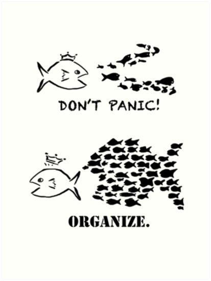
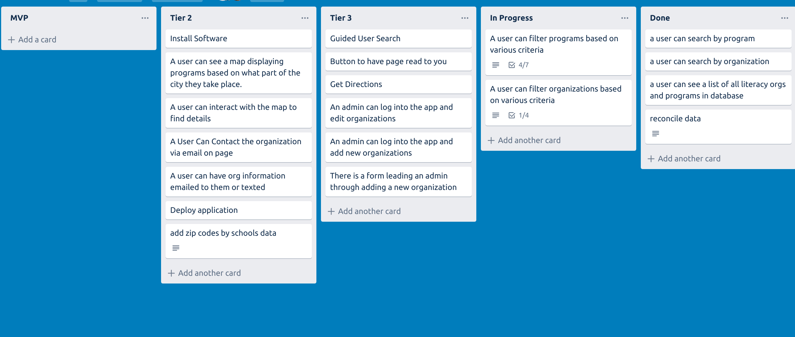
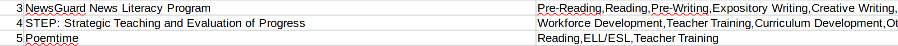
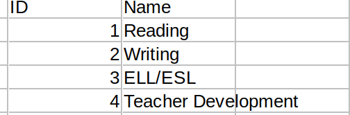
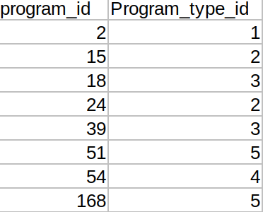
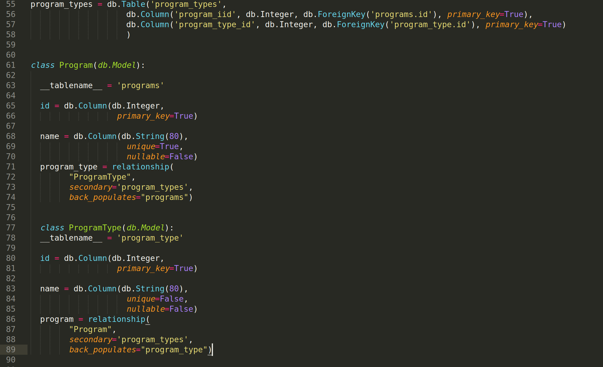
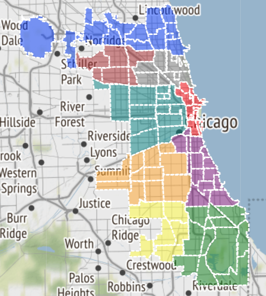

My ChiPy Blog
A series of blog posts about my time as a ChiPy Mentee. Check it out!
My ChiPy Blog Post 1 - Featuring Python, Flask, & TDD
Its been over a year since I graduated from Actualize Coding Bootcamp and I still feel like I have just scratched the surface of software development. Don’t get me wrong. I’ve learned a TON over the course of this past year, created things I never thought I would be able to, and made an incredibly scary yet exhilarating career pivot. That being said, I know there is still so much more to learn and I am super excited to be able to do that with the Chicago Python Mentorship Program this fall!
>The Project
My project idea for this program is pretty straightforward. I am recreating a organization/resource search tool that my current workplace – the Chicago Literacy Alliance (CLA) - has on their website. The CLA is an association of more than 120 organizations who work to help meet literacy needs for people of all ages and backgrounds. One of the main focuses of the CLA is to connect these member organizations to each other. An easy to use, interactive map and search tool is a great asset to have for the organization and its members. Unfortunately, as you can see below, the current version of Literaseek in need of a overhaul.


I plan to make my version of Literaseek much more user friendly, more informative, and more accessible to folks of various literacy levels. My main audiences for this app are students looking to find literacy programs and literacy organizations looking to connect with one another. Some key features I want to include are:
- An interactive map the user can use to zoom in an out of Chicago to see the literacy programs and organizations in their area.>
- An easy to use filter that allows the user to narrow their search based on program types, ages and proximity to schools, neighborhoods, and zipcodes.
- A guided search feature that can walk users through a few simple questions to make the filtering process easier. Using a large search tool can become quickly burdensome for folks with low literacy.
- Buttons throughout the page that will read the text to the user.
In addition to this, I hope to dive a bit into web scrapping and see what program and organizational information I can pull in an automated fashion. Luckily for me, I have a lot of this data provided. However, a common problem with resource websites and manuals is that they are incredibly difficult to keep up to date since program and organizational information can change year by year. Even if I were able to extract contact information from a variety of organization websites – that could prove to be incredibly helpful in keeping this up to date!
I definitely have plenty to think about and to get working on! My first two meetings with my mentor Ben have been incredibly helpful. He’s been really great at explaining old and new concepts. One of my main goals of this program – outside of building an awesome literacy resource search app – is to strengthen my understanding of structuring and writing good code. Ben seems like a great resource for this and has already suggested some great reads such as Clean Code by Robert Martin and gave me a great intro to the SOLID Principals (which I hope to write a future blog post about when I am able to wrap my head more around the Liskov Substitution Principle).
I definitely have plenty to think about and to get working on! My first two meetings with my mentor Ben have been incredibly helpful. He’s been really great at explaining old and new concepts. One of my main goals of this program – outside of building an awesome literacy resource search app – is to strengthen my understanding of structuring and writing good code. Ben seems like a great resource for this and has already suggested some great reads such as Clean Code by Robert Martin and gave me a great intro to the SOLID Principals (which I hope to write a future blog post about when I am able to wrap my head more around the Liskov Substitution Principle).
Adventures with TDD
Another concept my mentor and I have discussed, and something he suggests I do going forward, is using TDD – or Test Driven Development. This was a concept I worked with and was introduced to in my bootcamp.
The concept goes something like this – TDD is a development process where you write your tests or test cases before you write the actual code.
In order to understand TDD, it is important to first understand the value of testing code. When you are working on a project, it is easy to just jump right into the code and start writing the features. Doing this without writing any tests, however, means it can be hard for you to be sure your code is operating exactly as you intended and bugs may start to appear in production. Additionally, writing tests as you go ensures that by the end of it, you have tests for most of your code – ultimately making it less buggy.
In a nutshell, the TDD process looks like this:
- Write a test
- Run the test (and watch it fail)
- Write the feature code
- Run the test again (and watch it pass :-D )
- Refactor the code
- Repeat
I found this great graphic as well:

With Ben helping me walk through it, I was able to get a test up and running on my app! I am using the Pytest-flask plugin per Ben’s suggestion (there is also a Pytest plugin for Django). After writing a couple more tests on my own, I am already seeing the benefits of the TDD framework. Not only does it make sure your code is working exactly how you want it to (and not breaking other pieces of code), it helps you be very intentional about each feature and piece of code you put into your application. If you don’t have a test for it, you don’t need it. As someone who finds themselves down a variety of rabbit holes often – this type of intentional coding is something that I think can definitely help me in structuring my code.
While I am seeing the benefits, it is ultimately more time consuming (in the beginning of app development anyways) and will take some effort to learn well. I will try my best to be diligent test writer. I am in high hopes that highlighting this in my blog will make me more likely to stay on top of it!
Anyway, that is it for now! Thanks for sticking with me and many thanks to the ChiPy Mentorship team and my mentor Ben for taking the time and energy to help me grow and develop my python skill!
My ChiPy Blog Post 2 - Organization + Joins
Hello!
It is hard to believe that a month has already passed since my last blog post! It has definitely been a whirlwind of a month. I have made some note worth strides in my application but I also still have a long way to go.
I have been taking my time as I have been going through and slowly building up my application to make sure I understand each piece and why I am putting code where I am putting it. Below you’ll find a couple highlights of what I have been working on and some thoughts I have had along the way. Big shout out to my mentor Ben for all his help during this past month!
Don't Panic - Organize!
As I have been working on my project – I quickly saw the need for some type of organization to help me make sure everything I wanted was in the application and to make the work feel more doable. Given that I work full time and I am involved in other community organizations – the time I can spend on my project is unfortunately limited. This means when I do have time to sit down and work I want that time to be spent focused and productive. Something I have done for projects in the past is making a Trello board! Trello is a great organizational tool and I would highly recommended it for other folks looking for a organization tool. It allows you to create different “boards”, categorize, and track different tasks for a project. Its basically a really fancy to do list. It looks like this!
I quickly realized the first draft of my Trello board had cards that were too big - I would often sit down to work on my application and feel overwhelmed by the amount of work I had to do. This lead me to having a conversation with my mentor, Ben, about structuring my board and it lead to some really great suggestions!
The first thing we talked about is how you can write a work “ticket”. One approach is to structure tickets around the specific function you want to build or edit. For example, you might create a work ticket that says “build name filter”. With this card you would assume you need to build all of the code and back end logic to make a functioning name filter. Another way to write this, however, might be “a user can filter program by the program name”. This is a user flow focused approach on writing work tickets and it is more encompassing. With this I assume I not only have to build the back end logic but I need a place on the users side for them to be able to filter. This also makes sure that all the behaviors you want a user to have the ability to do is covered in your project.
Another topic Ben and I discussed in relation to this is creating a system of time estimates for each work ticket. This way you have a rough idea in your mind about how long something should take and if it looks like it is going to take too long – divide it up into separate tickets! One system to do this is is by assigning each work ticket a number:
- 1 = 1 hour
- 2 = hald a day to a full day
- 5 = serveral days
- 7 = a week
- 13 - serveral weeks
In general, you want to try and keep your work tickets down all between 1 and 5. If it looks like a ticket is going to take a week to several weeks that is probably something that can be divided up! While this system may not work for everyone – I have found it super useful in looking at and separating all the tasks I have to complete. I feel much more confident moving forward and getting everything done I want to on my project!
Joins, Joins, Joins
I know am one of the lucky ones in this program – a lot of the data I need is available to me by the organization I work at. Anything else I needed – I was able to find easily through the City of Chicago Data Portal. Its super cool – check it out if you have not! I got all of the program and organization information from datasets that are available to me at work. All zip code, neighborhood, and school information I pulled from the city of Chicago data portal. Given that one of the main functions of my application is give a user the ability to visualize and find programs close to them and that fit their needs – I want the user to be able to filter programs for specific attributes but also want to give the user to see all of the programs under a certain attribute. Take program type for example. A program can inhabit multiple types and a program type can have many programs – this is called a many to many relationship. In order to give the user the ability to search for information how I would like – that means I need create some join tables!
A join is when you combine two SQL tables based on a shared column or attribute. For the purpose of this section I will only be focusing on full outer joins. Here is a visual represnetation of what that would like:
 And here is what these two tables (Programs and Types) might look like on their own:
And here is what these two tables (Programs and Types) might look like on their own:
Programs:
Types:
We want to unite these two tables to make it easier to search for things. But right now we currently don’t have a straight forward way to pull this information together. These two tables need to be combined based off of one attribute.
In our programs example the Program table will be linked to the Type table based on the program_id and the Type table will be linked to the Program table based on type_id. It will then be sorted so that we can pull all the programs and every type they are associated with. We will also be able to see all programs of a specific type. This join table would look like this:
Finally, we have to make sure we are defining this relationship in our Flask application models folder. This might look something like this:
Annnnddd that’s it! Now we have a unified place with all of the information that we want to pull. This will make pulling this information stored across different table much more straight forward and simple.
Thanks for sticking with me! Until next time :-).
My ChiPy Blog Post 3 - Importing and Pulling Spatial Data with MySQL and Flask
Hello once again!
I know I said this in my previous post but I truly cannot believe how fast this past month has flown by. I have been picking away at my project, running into roadblocks, and working through them. One of the main pieces of my project involves creating an interactive map that displays the location of programs based on regions of the city and neighborhoods. This means I wanted to visually represent the Chicago neighborhood boundaries on a map. Luckily the shapefile data is easily available through the City of Chicago Data Portal. Getting the shapefile imported into my MySQL database and querying it in my app was not as easy as I had hoped. This is due to the fact that MySQL and Flask do not work very well with Geometry data and shapefiles. My process on importing the database and querying it into my app is discussed below for my final post! Let's dive in!
>Getting Spatial Data into MySQL
The first layer of my map in my map features the Chicago neighborhood boundaries. In order to get this data I downloaded the shape file from the City of Chicago data portal in a csv file. I then imported my shapefile into my MySQL database as geometry data. I imported it into its own table using the ogr2ogr utility from the GLAD Library. GLAD is a library that is used for reading and writing raster and vector geospatial data formats. The command I used to execute this looked like this:
ogr2ogr –f MySQL MySQL:database_name,host=localhost,user=database_username, password=database_password path/to/shapefile -nln datatable_name -update -overwrite -lco engine=MYISAM
If the table and column specified in the command are not found, the data will be automatically imported into a new table. I edited the bold words written above according to my system configuration and needs and success! I now have a new table in my database that has all of my Neighborhoods and shapefile information.
Next, I needed to move my shapefile data over to my Neighborhoods table since I had set up my Neighborhoods table before importing my spatial data. I needed to make sure the neighborhood names matched as well to ensure the correct spatial data was copied to the correct neighborhood columns. I was able to achieve this with a simple SQL query that looked like this:
INSERT INTO Neighborhoods (SHAPE)
SELECT SHAPE2
FROM Neighborhood_Shapes
WHERE Neighborhood_Shapes.pri_neighboorhoods = Neighborhoods.name;
Pulling the SHAPE Column into Flask
Once that was complete my next step was pulling the geometry data from my Neighborhoods table into my Flask application. I ran into a problem while attempting to do this - GeoAlchemy2 - the extension for the SQLAlchemy ORM to work with spatial databases—does not support MySQL databases. This means there was nothing built into the ORM or the models file that I could use to pull my geometry column into my app. I spoke with my mentor Ben and after confirming that there is not a column available within the SQLAlchemy ORM that I can use, Ben suggested creating a custom column in my models file. Ben then sent me Flask documentation on doing this which you can find here and there is even a geometry specific example here. I created my geometry column at the top of my models.py file like this:
class Geometry(UserDefinedType):
def get_col_spec(self):
return "GEOMETRY"
def bind_expression(self, bindvalue):
return func.ST_GeomFromText(bindvalue, type_=self)
def column_expression(self, col):
return func.ST_AsGeoJson(col, type_=self)
I then called it in my Neighborhoods model like this:
SHAPE = db.Column(Geometry, nullable=False)
And that’s it! I was able to import my Chicago Neighborhoods shapefile into my MySQL database then use that geometry information to work with Leaflet and create a map that looks like this:
Overall, I am excited about what I have been able to learn and create throughout the duration of my ChiPy mentorship. I have really enjoyed working with my mentor and learned a ton! I am excited to push through these last couple weeks to create a more polished product that will be an upgrade from the current version of Literaseek!